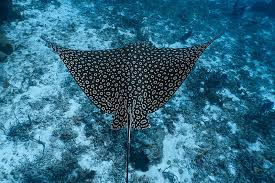

Especies de Rayas

Raya Águila
La raya águila es conocida por su gran tamaño y sus espectaculares saltos fuera del agua.
Raya Manta
La raya manta es una de las especies más grandes de rayas, conocida por sus majestuosos movimientos.

Raya Eléctrica
La raya eléctrica tiene la capacidad de generar descargas eléctricas para defenderse de sus depredadores.

Raya Leopardo
La raya leopardo se distingue por las manchas en su cuerpo, similar a las de un leopardo.